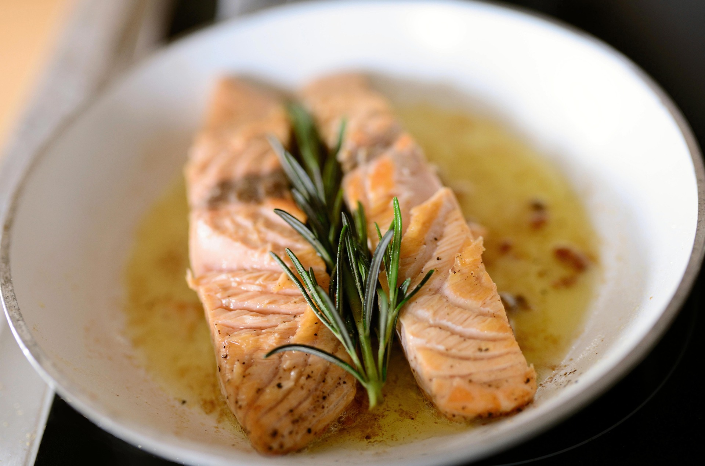
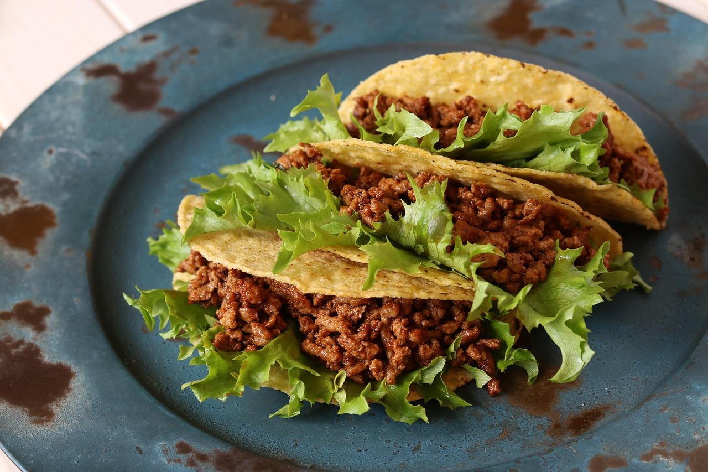

Oven Baked Salmon with Rice

Ingredients:
- 1 salmon fillet
- 1 cup rice
- 1 tablespoon olive oil
- Salt and pepper
- 1 cup asparagus
Instructions:
- Preheat oven to 400°F.
- Season salmon with olive oil, salt, and pepper.
- Bake 12-15 minutes until fully cooked.
- Cook rice according to package directions.
- Steam asparagus and serve together.
Ground Turkey Tacos

Ingredients:
- 1 lb ground turkey
- Taco seasoning
- Whole wheat tortillas
- Lettuce, tomato, cheese
Instructions:
- Cook ground turkey over medium heat.
- Add taco seasoning and stir.
- Warm tortillas.
- Assemble tacos with toppings.
Dinner Nutrition Comparison
| Meal | Prep Time | Calories |
|---|---|---|
| Salmon & Rice | 30 minutes | 520 |
| Turkey Tacos | 25 minutes | 480 |